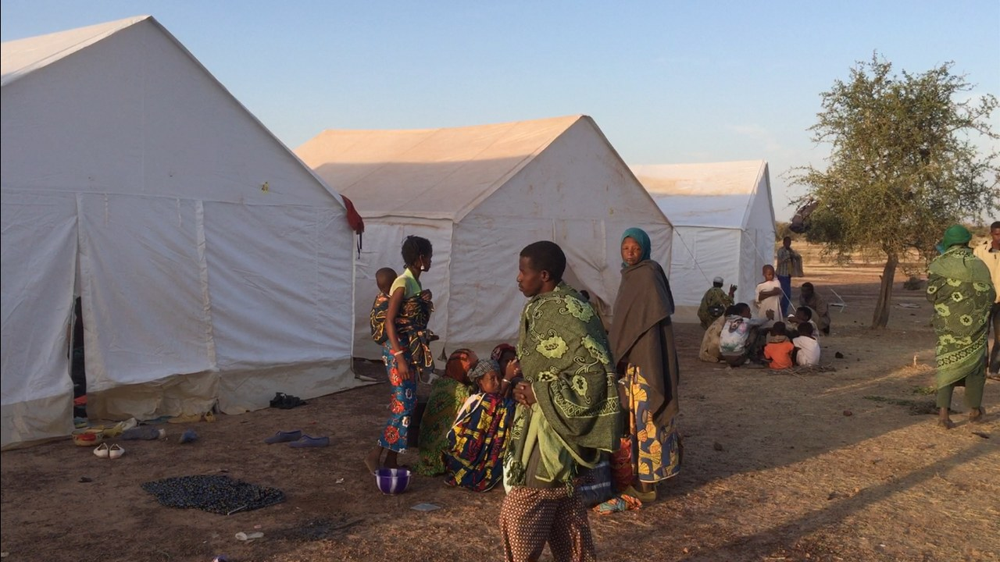

Can the Central Sahel Feed Its People When the Roads Themselves Have Become the Front Line?
The Central Sahel is facing a humanitarian catastrophe that is now driving the security crisis: hunger is set by access, and the roads themselves have become the front line.

1. Executive judgement
The Central Sahel is no longer facing a security crisis with humanitarian consequences. It is facing a humanitarian catastrophe that is now driving the security crisis. Nearly four million people are uprooted across Burkina Faso, Mali and Niger, hunger is set by access rather than by harvests alone, and armed groups have learned that they do not need to defeat an army if they can strangle a road, a market or a fuel convoy. The Alliance of Sahel States (AES) promised sovereignty and security. What citizens can measure today is different: closed schools, besieged towns, shrinking aid and fields that cannot be reached safely. Unless access, livelihoods and local trust are rebuilt together, each lean season will recruit faster than any operation can clear.
2. The catastrophe today
Displacement: a region on the move
UNHCR reported on 9 October 2026 that nearly 4 million people are uprooted across Burkina Faso, Mali and Niger, including more than 818,000 refugees and asylum seekers. The agency put the total at 3.8 million as of 31 July 2026, roughly twice the level of October 2020, when the three countries counted more than 1.7 million internally displaced people and 365,000 refugees. Burkina Faso carries the largest share of internal displacement, and the movement no longer stops at the three states' borders. UNHCR records almost 500,000 Burkinabe refugees and asylum seekers in neighbouring countries in 2026, up from over 300,000 at the end of 2025, many now in coastal Benin, Côte d'Ivoire, Ghana and Togo. More than 334,000 Malians are refugees abroad, and over 106,000 Nigeriens are recorded as refugees in neighbouring countries.
The pattern matters as much as the total. In Koro, in Mali's Bandiagara region, some 86,000 Burkinabe refugees had arrived by July 2026, among them more than 14,000 children and 6,000 women identified as being at particular risk. UNHCR notes that the refugee population there is approaching the size of the host community, pressing on land and water that were already scarce. Anyone who has worked a displacement corridor knows what that ratio means: the queue at the water point becomes a political fact, and a field dispute becomes a test of whether two communities can still live side by side.
Hunger: an access crisis wearing the clothes of a food crisis
WFP states that 5.6 million people across Burkina Faso, Mali and Niger were projected to face crisis levels of food insecurity during the June to August 2026 lean season, before the latest escalation is counted. Regionally, WFP, citing the Cadre Harmonisé analysis, expected 55 million people in West and Central Africa to face crisis levels of hunger or worse in the same lean season, with more than 3 million in emergency conditions (Phase 4), over double the 2020 figure. OCHA's 2026 Sahel overview, published on 3 June 2026, counted 24.3 million people in critical need across the wider Sahel.
The Malian evidence shows why this is, at its core, an access problem. WFP reports that areas where families received reduced rations saw a 64 per cent surge in acute hunger (IPC Phase 3 and above) since 2023, while communities that received full rations saw a 34 per cent decrease. The same household, the same soil, the same rains: the variable was whether food could physically arrive. A family does not eat a national harvest figure. It eats what reaches its market, at a price it can pay, in a week when the road was open.
Children: malnutrition, and a generation out of school
WFP expects more than 13 million children across West and Central Africa to suffer from malnutrition in 2026. In Burkina Faso, UNICEF's 2026 Humanitarian Action for Children appeal records that, as of early 2026, 4.5 million people require urgent assistance, including 2.9 million children. OCHA reports that nearly 12,900 schools are closed due to insecurity across the Sahel, depriving over 2.3 million children of education and exposing them to exploitation and recruitment.
A closed school is not a paused service. It is a fork in a child's life. A boy out of school for two years rarely returns; he goes to artisanal mining, to distant herding, or to an armed group that offers food, a motorbike and a story about why he matters. A girl out of school faces early marriage presented as protection. Every term lost is a security fact, not only an education statistic.
Women: carrying the household, at the highest risk
Displaced women run the daily economy of this crisis: queuing for water, trading what remains, keeping children fed when rations fall short. Briefing the UN Security Council in August 2025, UN Women Executive Director Sima Bahous reported that more than one million girls are out of education across the Sahel, that in Burkina Faso alone abductions of women and girls had more than doubled in 18 months, and that two thirds of women surveyed feel unsafe on the growing journeys for water and firewood. The same briefing recorded a counterweight: in border zones in Mali and Niger, women's participation in local peacebuilding rose from 5 per cent to 25 per cent, helping resolve over 100 disputes over scarce natural resources. Where women sit in the room when water points, grazing dates and market access are decided, disputes get settled before they become funerals.
Security drivers: siege, blockade and a fractured region
Jama'at Nusrat al Islam wal Muslimin (JNIM) and Islamic State Sahel Province compete with each other as much as with the state, but both have converged on economic warfare: blockades of towns, taxation at checkpoints, ambushes on fuel and supply convoys. Burkina Faso's besieged northern towns, Djibo the best known, survive on escorted convoys while their populations swell with displaced families. In Mali, JNIM imposed a fuel blockade on the capital from September 2025, attacking tanker convoys on the corridors from Senegal and Côte d'Ivoire.
In April 2026 the pressure reached the centre of the Malian state. Reuters reported on 30 April 2026 that coordinated attacks by al Qaeda linked insurgents and a coalition of mostly Tuareg separatists killed Mali's defence minister, forced Russian contractors to withdraw from a strategic town, and saw separatists retake Kidal, seized by the army with Russian help in 2023. JNIM claimed the Hombori base, said it held checkpoints near Bamako, and threatened a complete siege of the capital, a threat given weight by its earlier fuel blockade. ACLED's senior West Africa analyst, Héni Nsaibia, told Reuters a full blockade would likely force Mali's military to prioritise the capital and deprioritise other areas.
Politically, the region has been reordered. Mali, Burkina Faso and Niger, all under military rule, formed the AES, withdrew from ECOWAS with legal effect from 29 January 2025, expelled French forces, ended the UN peacekeeping mission in Mali, and turned to Russian partners, including Africa Corps personnel. The withdrawal of international forces removed air support, intelligence and medical evacuation capabilities that have not been replaced at the same scale, whatever the sovereignty argument for ending them. In June 2026 the three states also deposited notifications of withdrawal from the International Criminal Court, narrowing accountability options while the one year process runs. In mid October 2026, reporting pointed both ways at once: AES foreign ministers publicly ruled out rejoining ECOWAS, while a first ministerial level AES and ECOWAS meeting reportedly agreed joint working groups on future cooperation. The space between those statements is where regional diplomacy will either recover or fail.
3. The deeper driver beneath the headlines
The obvious framing is a contest between juntas and jihadists for territory. It is not wrong, but it is not the driver. The deeper driver is the collapse of the local bargains that once governed land, water, pasture and justice in the tri border countryside. Arrangements that settled grazing dates, corridor routes and compensation for crop damage depended on chiefs, officials and courts whose authority has thinned or been captured. Climate stress shortened the margin for error: UNDP warned on 15 September 2026 that the 2026/2027 El Niño is expanding areas at risk of rainfall deficits, while noting genuine disagreement between forecast models for West Africa, and stressed that conflict, not climate, remains the primary driver of need, with climate acting as a threat multiplier on competition over water, pasture and farmland.
Into that vacuum, armed groups insert themselves as tax collectors, judges and recruiters. A young man rarely joins out of theology. He joins because a dispute over his family's field went unanswered, because a security operation humiliated his community, because the group pays and feeds him, or because it is the only authority that shows up. Operations that clear a village and leave it ungoverned simply schedule the next recruitment cycle. The contradiction is this: the AES states define the crisis as a sovereignty problem, yet their citizens' daily experience is an absence of basic sovereign functions across much of the countryside: a safe road, a dispute that gets a hearing, a school that opens.
4. The humanitarian system under strain
The aid system is smaller than the crisis it faces. OCHA records that in 2025 only 29 per cent of required Sahel funding was received, the lowest level in a decade. UNHCR's Sahel response was only 27 per cent funded as of September 2026, against a requirement of 329.6 million US dollars. WFP needs 151 million US dollars for crisis response in the three countries for September 2026 to February 2027 alone. A Sida analysis put Burkina Faso's response plan at only 18 per cent funded by August 2026.
Access is as constrained as money. The same Sida analysis describes a Burkina Faso operating environment where government authorisation is required for every intervention, where food and medicine classed as sensitive must move in rare, unpredictable and expensive military escorted convoys, and where cash distribution has been suspended since 2024. In Mali, WFP leans on negotiated access models and UNHAS flights. Negotiation with de facto authorities, including armed groups that control roads, is no longer a specialism. It is the operating system, with real dilemmas: escorts can compromise neutrality, and checkpoint payments can feed the war economy. But serving only populations a government can reach abandons precisely the besieged communities whose treatment will decide whether the insurgency grows. Aid at 27 per cent funding can slow the dying. It cannot reverse the crisis. That reversal has to come from the livelihood and local governance work below, funded as security policy, not charity.
5. The future: reconstructing intercommunity livelihoods
Reconstruction will not start with a conference communique. It will start with a water point two communities manage together without a fight, a corridor herds cross on agreed dates, and a market day that happens every week for a year. The model exists in miniature: UNHCR reports that in Koro, cooperatives bringing together Burkinabe refugees and host members expanded cultivated land from 21 hectares in 2025 to 45 hectares in 2026, raising food production and incomes, with similar work in Kaya in Burkina Faso. The task is to turn these pockets into a method.
First, resource agreements before projects. In each commune, farmer and herder groups, including displaced and host households, should negotiate written agreements on grazing corridors, entry and exit dates, water point rotas and compensation for crop damage, witnessed by traditional and municipal authorities. The agreement is the project. Infrastructure built without it becomes a new prize to fight over.
Second, shared assets that create shared interests. Rehabilitate water points, pastoral wells, small dams, market sheds, storage and feeder roads as jointly managed assets, with committees drawn from both communities and displaced households, and maintenance funds fed by user contributions and matched support. WFP reports that land restoration in the Sahel has generated up to 30 dollars for every dollar spent, and that communities have rehabilitated 300,000 hectares across five countries since 2018. Shared assets convert a zero sum argument over a fixed resource into a joint interest in a bigger one.
Third, joint cooperatives and value chains. Mixed cooperatives for millet, sorghum, cowpea, livestock fattening, milk, leather and gum arabic, with shared transport and transparent pricing, give former antagonists a weekly reason to cooperate and a shared loss if violence returns. Priority goes to value chains employing young men at the ages most exposed to recruitment, and to trade with coastal states, which now host hundreds of thousands of Burkinabe refugees and cannot be treated as outside the Sahel file.
Fourth, women and youth at the centre. Women's savings groups, market associations and voting seats on every water and land committee should be conditions of funding, not aspirations. For youth, pair catch up schooling with paid work on shared assets, so a pay packet and a classroom compete with the armed group's offer in the same week.
Fifth, mediation tied to livelihoods. Mediation committees attached to each cooperative and asset should handle exactly the disputes the project generates: corridor breaches, damaged crops, unpaid debts, contested plots. They need small, fast compensation funds, so a trampled field is paid for in days, not argued over for a season. Justice that arrives late is recruitment material.
Sequencing. From 0 to 6 months: protect life and the next season. Negotiate access on priority corridors, pre position supplies before roads close, sign the first resource agreements, start cash for work on water points and feeder roads. From 6 to 18 months: restore production. Scale cooperatives, restock herds on a shared basis, reopen market days under agreed security arrangements, restart catch up education, extend agreements so corridors connect. From 18 to 36 months: consolidate. Formalise agreements in municipal decisions, hand asset maintenance to committees with audited funds, link cooperatives to buyers, and shift households from ration dependence toward production, trade and targeted social protection.
Risks and red lines. Do not build shared assets where one community is currently displaced by the other without a prior settlement on return and land; that hardens dispossession. Do not let security forces select cooperative members or committee officers. Do not pay undisclosed checkpoint taxes. Do not promise returns on a political calendar; return is an outcome of restored livelihoods and safety.
Indicators that trust is returning. Watch behaviour, not communiques: herds crossing corridors on agreed dates without escort; market days held on schedule for consecutive months; crop damage claims settled within weeks; women travelling to market and water points without today's fear; out of school children entering catch up classes; displaced families choosing to plant in host areas rather than waiting for a ration. When those move, the security map will follow.
6. What to watch in the next 90 days
- Bamako and the fuel corridors. Whether JNIM renews blockade pressure on fuel convoys from Senegal and Côte d'Ivoire, and whether Mali's army can keep those corridors open without stripping the centre and north.
- The AES and ECOWAS track. Whether the reported joint working groups meet and produce terms on movement and trade, or whether the refusal to rejoin hardens into a rupture herders and traders pay for at every border.
- The post harvest assessment. The next Cadre Harmonisé cycle and the final reading of the El Niño affected 2026 harvest will set the scale of the June to August 2027 lean season. UNDP notes the forecast models disagree, so the assessment, not the forecast, is the document to watch.
- Besieged towns in Burkina Faso. Whether escorted resupply to towns such as Djibo becomes more regular, and whether civilians are free to leave and return. Convoy frequency is the most honest public indicator of state reach in the north and east.
- Funding for early 2027. Whether WFP's 151 million dollar requirement and UNHCR's appeal close their gaps, or whether ration cuts extend into the pre lean season months, when they do the most nutritional damage to children.
- Coastal spillover. Burkinabe refugee arrivals and border attacks in northern Côte d'Ivoire, Ghana, Togo and Benin. If coastal states militarise their north without livelihood investment, the Sahel crisis will have exported its model.
- School reopenings. How many schools reopen and stay open this academic year: the clearest proxy for whether security gains are real enough for a parent to send a daughter through the gate.
The Central Sahel's people have not run out of resilience. They have run out of margin. Margin can be rebuilt: a corridor honoured, a market reopened, a ration delivered whole, a dispute settled in a week. That is unglamorous work, done commune by commune. It is also the only work that has ever ended a crisis like this one.
Sources
- OCHA, "24 million people in the Sahel urgently need aid" (2026 Humanitarian Needs and Response Overview for the Sahel), 3 June 2026. https://www.unocha.org/publications/report/mali/24-million-people-sahel-urgently-need-aid-and-world-needs-do-more
- UNHCR, "UNHCR calls for urgent investment as displacement crisis deepens across Central Sahel", 9 October 2026. https://www.unhcr.org/news/briefing-notes/unhcr-calls-urgent-investment-displacement-crisis-deepens-across-central-sahel
- WFP, "Central Sahel" emergency page, accessed 31 October 2026. https://www.wfp.org/emergencies/sahel-emergency
- WFP, "Humanitarian aid cuts push millions deeper into hunger amid rising violence and population displacement in West and Central Africa", January 2026. https://www.wfp.org/news/humanitarian-aid-cuts-push-millions-deeper-hunger-amid-rising-violence-and-population
- UNDP, "UNDP calls for urgent anticipatory investment as El Niño worsens an already conflict driven crisis in West and Central Africa", 15 September 2026. https://www.undp.org/africa/waca/press-releases/undp-calls-urgent-anticipatory-investment-el-nino-worsens-already-conflict-driven-crisis-west-and-central-africa
- Reuters, "Kremlin says Russian forces will stay in Mali as insurgents press attacks", 30 April 2026, via SRN News. https://srnnews.com/kremlin-says-russian-forces-will-stay-in-mali-as-insurgents-press-attacks/
- UN Women (Sima Bahous, Security Council briefing), via UN News, "Erasure or empowerment? In Africa's Sahel, women confront a stark choice", 7 August 2025. https://www.globalsecurity.org/military/library/news/2025/08/mil-250807-unnews05.htm
- UNICEF, "Burkina Faso 2026 Humanitarian Action for Children Appeal", 2026.
- Sida, "Humanitarian Crisis Analysis 2026: Burkina Faso", 9 September 2026. https://cdn.sida.se/app/uploads/2026/09/25151113/Burkina-Faso-HCA-2026-September.pdf
- SAIIA, "Security, Sovereignty and the Collapse of Multilateralism in the Sahel", Policy Insights 175, May 2026. https://saiia.org.za/wp-content/uploads/2026/05/SAIIA_PI_175_SecuritySovereigntyCollapseSahel_.pdf
Verification notes and gaps. Country by country IDP totals for 2026 could not be reconciled to a single date: UNHCR's October 2026 briefing gives the authoritative regional total, while published country breakdowns use different dates and counting systems, and Burkina Faso's official displaced figures and claimed returns are contested. This report therefore uses the regional total and the sourced Koro and coastal figures, not a 2026 IDP figure for each country. No International Crisis Group report with an October 2026 position on the AES and ECOWAS rupture was open and read; the reported October ministerial contact rests on regional news reporting and should be confirmed against an ECOWAS or AES communique before publication. The women and protection evidence comes from the August 2025 UN Women Security Council briefing, the most recent comprehensive statement found; no equivalent October 2026 GBV dataset was verified, and GBV is under reported in besieged areas.
Analysis by the SRM Research Team · Lead analyst: Daniel Mwendanga, Conflict, Peace & Security Analyst and Researcher / SRM-Consultant. Also published by Peace and Security Bridges: peaceandsecuritybridges.org
← All briefings